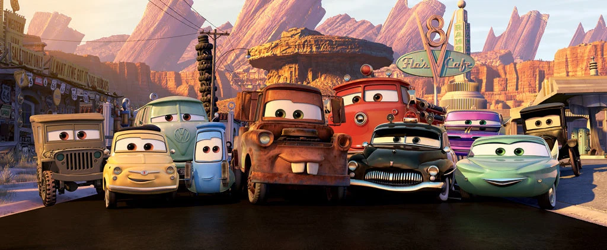

La velocidad tiene un nombre
Bien, aquí voy, concentrate, velocidad, soy veloz. 1 ganador, 42 perdedores, yo desayuno perdedores. Desayuno, tal vez debí desayunar, un desayunito estaría bien, nonono concentrate, velocidad. Soy más que rápido más que veloz. ¡Soy un rayo!
Descubrir la historia
Cars: Del egoísmo a la humildad
Cars (estrenada en 2006) es una película de animación de Pixar y Walt Disney Pictures dirigida por John Lasseter y Joe Ranft. La historia sigue a Rayo McQueen, un arrogante y veloz coche de carreras novato que sueña con ganar la codiciada Copa Pistón y convertirse en la estrella del patrocinador Dinoco. Pero que pasará por diversos acontecimientos que le harán replantearse que es lo que realmente aspira tener.
El sueño del novato
La película empieza con la carrera inicial, las 400 vueltas
de la Copa Pistón. La carrera que marcaría el final de la
temporada. Rayo McQueen se muestra con una gran superioridad
ante sus rivales, adelantándolos con suma facilidad, pero su
eterno rival, Chick Hicks, sabotea a Rayo para impedir su
victoria con choques y empujones, aunque falla en el intento.
Tras conseguir una gran ventaja, el ego se le sube por las
nubes y McQueen decide no cambiar sus neumáticos. Esto
provocaría un triple empate entre McQueen, Chick Hicks y
Strip Weathers (el máximo ganador). El vencedor se decidirá
en una carrera de 200 vueltas entre los tres en California,
pero no todo avanzaría como lo esperado...

El acontecimiento que lo cambió todo
Tras decidirse la carrera final, McQueen y Mack parten para California. Tras un largo viaje,
Mack empieza a agotarse al no parar para descansar, el le pide a McQueen parar para poder dormir, pero Rayo
rechaza al querer llegar a su destino antes que Chick, le promete a Mack que estará despierto con
el toda la noche, pero inevitablemente no logra cumplirlo.
Tras un incidente, McQueen cae del trailer y se pierde en el camino al intentar volver con Mack, equivocándose
de camino y llegando a un pueblo llamado Radiador Springs, donde por la presión de ser perseguido por el Sherif
del pueblo y destrozar la carretera principal, deberá arreglar su estropicio mientras aprende
los valores de la humildad.

La humildad te hace mejor persona
McQueen por la prisa y desesperación de querer salir lo antes posible, empeora el daño que ya había hecho.
Doc le reta a una carrera en la que si el gana arreglará la carretera otra vez, y si pierde se irá libre.
Tras perder la carrera, McQueen arregla media carretera por la noche, y se centra en dominar el error que le costó
la carrera contra Doc.
Tras no conseguir nada, McQueen vuelve a su trabajo. Después, entabla una verdadera amistad con su nuevo mejor amigo Mate,
tras pasar una noche de diversión juntos. A la mañana siguiente, descubre que Doc es un ex corredor de carreras y corre a contarselo
a los pueblerinos pero nadie le cree. Sally, al ver que realmente ha cambiado le invita a un paseo y forman una bonita relación.
McQueen vuelve a la pista de tierra donde perdió y presencia la enorme experiencia qur marca la diferencia entre cómo corre Mcqueen y lo que Doc demuestra al correr otra vez.

La separación indeseada
McQueen descubre que Doc no tuvo opción más que retirarse, debido a un accidente que hizo que todos se olvidaran de el. A la mañana siguiente, Mcqueen parace haber desaparecido, pero hace un ultimo favor a los pueblerinos dandole al pueblo el ambiente y aire que tenía en sus momentos de gloria. Pero los reporteros lo encuentran, y Mcqueen es trasladado fuera del pueblo, del que hizo nuevos amigos y no quería irse, pensando si realmente valía la pena ir a la carrera o no...

Lección aprendida
McQueen llega a California, pero este no está concentrado en la carrera y esto se demuestra en la carrera. Inseguro de sí mismo, comete errores por perder la concentración... Pero el milagro ocurre, sus amigos del pueblo llegan para apoyarlo en la carrera. Tanto Doc como Guido (el montacargas) aportan la eficiencia necesaria para que Rayo vuelva a estar justo detrás de ellos. En un momento crítico, Chick vuelve a empujar a Rayo fuera de la pista, pero emplea lo que aprendió de Doc empleando por primera vez el derrape, enorgulleciendo a Doc. Mcqueen va a ganar... Pero Chick empuja y saca volando a Strip, en vez de ganar, Mcqueen ayuda al rey a terminar su ultima carrera, diciendo que es solo una copa vacía. Aúnque Chick ganó la copa, McQueen terminó ganándose el respeto del público y permaneciendo en el equipo que le dió su oportunidad. Demostrando que ha cambiado respecto a como era al principio de la película.